# Ch6
# 概念
图的顶点至少要有一个，边可以没有
顶点数：
边数：
- 有向图、无向图
- 简单图（不存在重复边、不存在到自身的边）、多重图
- 度、入度、出度
- 有向图所有顶点的入度和出度之和相等，且等于边数
- 路径、路径长度、回路
- 简单路径、简单回路（顶点不重复出现）
- 距离（从 u 到 v 的最短路径的长度，若不存在路径则为无穷大）
- 子图：由某几个顶点和某几条边组成的图
- 连通、连通图和连通分量
无向图中从 v 到 w 有路径存在，则 v 和 w 是连通的
若图中任意两个顶点都连通，则该图是连通图，否则是非连通图
无向图中的极大连通子图称为连通分量
有 个顶点的连通图中，至少存在 条边（边数小于 一定是非连通图）
个顶点的非连通图，最多有 条边
- 强连通图、强连通分量
在有向图中，若有一对顶点 v 和 w，从 v 到 w 有路径，从 w 到 v 有路径，则 v 和 w 是强连通的
若图中任意两个顶点都强连通，则该图是强连通图，否则是非强连通图
有向图中的极大强连通子图称为强连通分量
一个有向图有 个顶点，如果它是强连通图，则至少有 条边（环路）
- 生成树、生成森林
连通图的生成树是包含所有顶点的极小连通子图（若有 个顶点则生成树有 条边）
极大连通子图 vs 极小连通子图
极大连通子图要求连通且包含尽可能多的顶点和边，极小联通子图要求保持连通且边数最少
- 边的权、网和带权路径长度
带权图中，边有权值。路径上所有边的权值之和称为带权路径长度 - 完全图（也称简单完全图）
无向图，有 个顶点，有 条边的，称为完全（无向）图（顶点两两之间都有边）
有向图，有 个顶点，有 条边的，称为完全（有向）图 - 稠密图、稀疏图
当 时，可以视为稀疏图 - 有向树
一个顶点入度为 0，其他顶点入度均为 1 的有向图，称为有向树
# 图的存储及基本操作
# 邻接矩阵法
带权图：
1 |
|
无向图的邻接矩阵一定是对称的，所以只需要存上三角（或下三角）就行
对于无向图，邻接矩阵第 行非零元素的个数即为顶点 的度
对于有向图，邻接矩阵第 行非零元素的个数即为顶点 的出度，第 列非零元素的个数即为顶点 的入度
邻接矩阵适合稠密图
# 邻接表法
稀疏图适合用邻接表存储
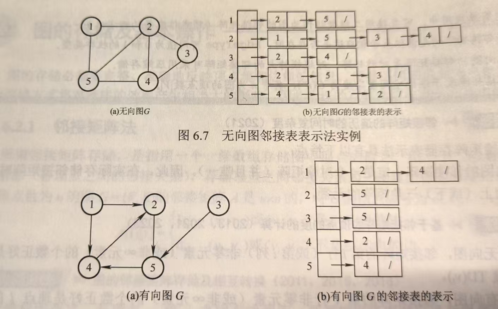
1 |
|
对于无向图，所需要的空间为；若为有向图，空间为
# 十字链表
有向图的一种链式存储结构
每条弧、顶点都用结点表示
顶点结点
firstIn 表示进入这个结点的第一个弧节点， firstOut 表示出去这个结点的第一个弧节点
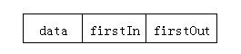
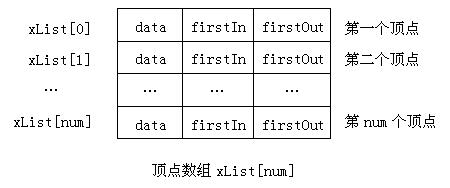
弧结点
tailVexh 和 headVex 存放弧尾和弧头在顶点数组的编号。 hLink 则表示指向弧头相同的下一条弧， tLink 则表示指向弧尾相同的下一条弧
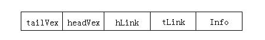
王道这里的弧头指的是箭头的头部，弧尾指的是箭头的尾部，王道这一部分不知道哪个天才写的，纯误导人，直接看英语就行了
示例
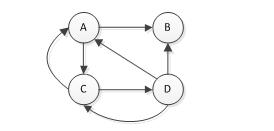
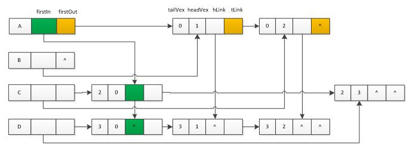
# 邻接多重表
无向图的一种链式存储结构
边结点：
| ivex | ilink | jvex | jlink | (info) |
顶点结点：
| data | firstedge |
和十字链表差不多意思，只不过这个是无向图
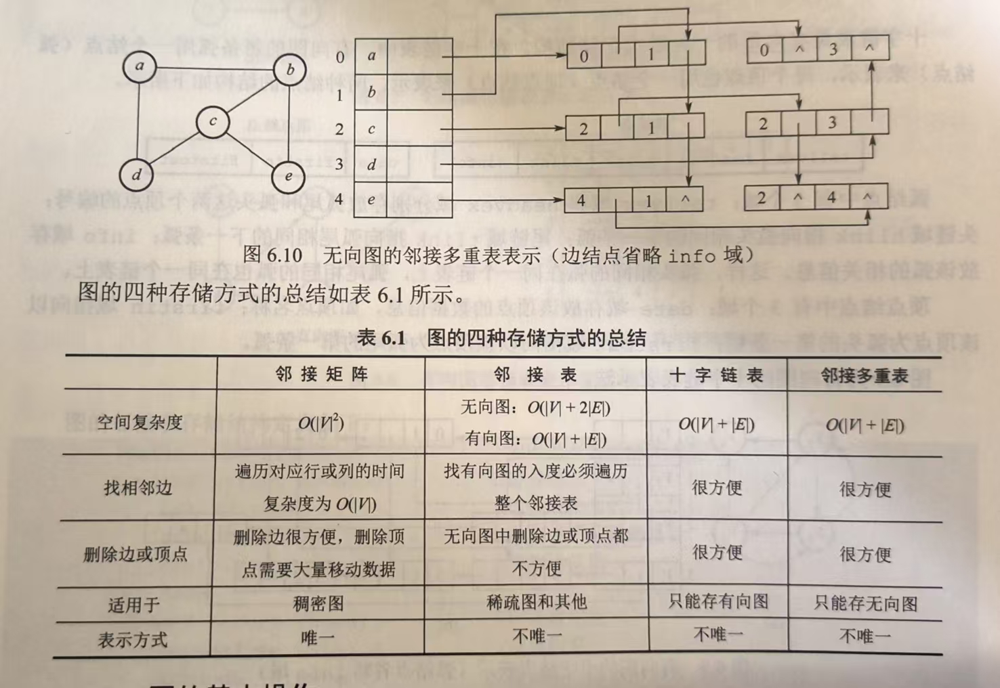
# 图的基本操作
# 图的遍历
- BFS
用队列实现，入队的时候 visit，出队的时候检查邻接点
1 | void BFS(ALGraph G, int i){ |
时间复杂度：
1 | void DFS(MGraph G, int i){ |
时间复杂度：
- BFS 求
u到v的最短距离
在 BFS 基础上添加一个数组d，记录从u到v的最短距离；增加一个数组pre记录路径
1 | void BFS_MIN_Distance(ALGraph G, int u, int target) { |
- DFS
用栈实现
1 | void DFS(ALGraph G, int i){ |
时间复杂度：
1 | void DFS(MGraph G, int i){ |
时间复杂度：
如果是非连通图，则需要多次调用 DFS（再扫描一次 visit 数组，找到未访问的顶点然后继续调用 DFS）
# 图的应用
# 最小生成树 MST
最小生成树：从连通无向图中找出一棵树（包含所有 n 个节点和 n-1 条边），同时边的权重之和要最小
- Prim 算法
随便取一个根节点记作 visited，不断寻找 visited 节点和 unvisited 节点之间权重最小的边
初始的时候只有一个结点，从顶点开始每次找到和已有的结点距离最小的边，加入树中，直到树中顶点数等于顶点数（每次要保证树是连通的且没有回路）
时间复杂度：，适用于求稠密图的最小生成树 - Kruskal 算法
每次找到距离最短的边，加入树中，直到所有顶点都在一个连通分量上
1）创建一个队列，将边按权重排序，最小的在最上面；（2）从顶端不断 dequeue，如果符合不在同一棵树里就接受那条边
# 最短路径
-
Dijkstra 算法
有权图的单源最短路算法
求从源点到其他点的最短路径：每次选距离最近的点，更新源点到其他点的最短距离
一开始和其他点的距离全都初始化为INF，和自己的距离为 0，每次在 unvisited 的结点中找距离最小的 visit，然后看这个结点的邻接点，新的距离比旧距离小则更新
画一个表，分别是是否 visit、编号、距离和路径，每次取 unvisited 里最小的 -
Floyd 算法
多源最短路算法，求所有顶点之间的最短路径
递归产生一个 n 阶方阵序列
直接看例子：
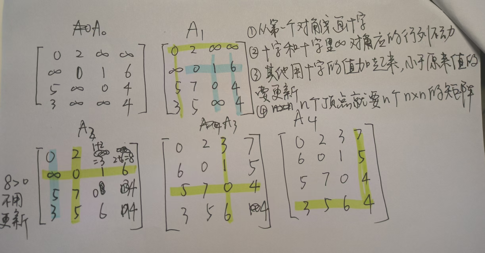
路径就是加起来的两个值的路径
# 有向无环图描述表达式
有向图中不存在环，则称为有向无环图，DAG
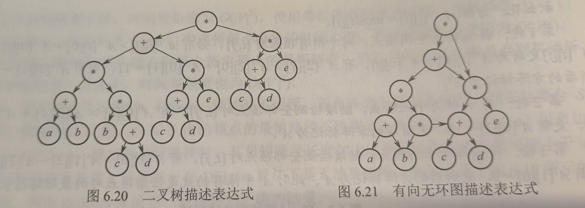
先用树表示，然后把能合并的合并到一起，得到一个有向无环图
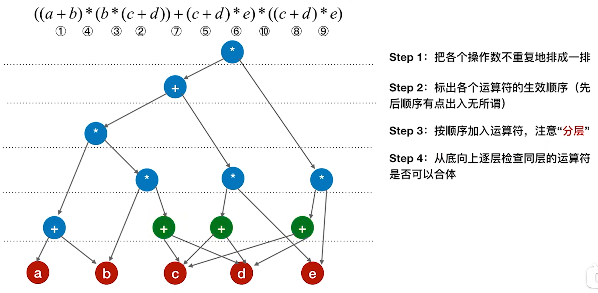
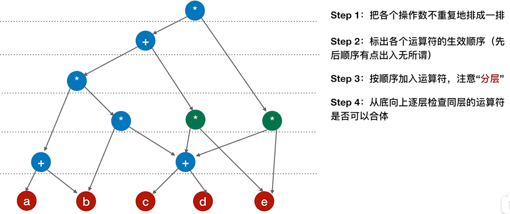
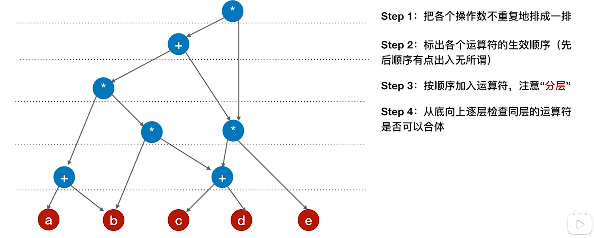
# 拓扑排序
AOV 图顶点表示活动，边表示活动间的依赖关系
- 拓扑排序
当且仅当一个有向图为有向无环图（directed acyclic graph，或称 DAG）时，才能得到对应于该图的拓扑排序。每一个有向无环图都至少存在一种拓扑排序。
方法：不断寻找入度为 0 的节点 pop 出去，删除该节点和相关的边
采用邻接表时，时间复杂度为，采用邻接矩阵时，时间复杂度为
序列不唯一
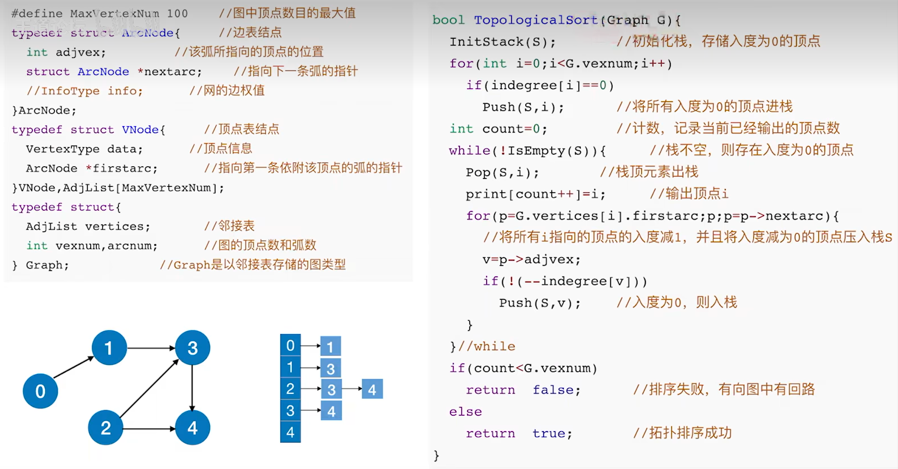
-
逆拓扑排序
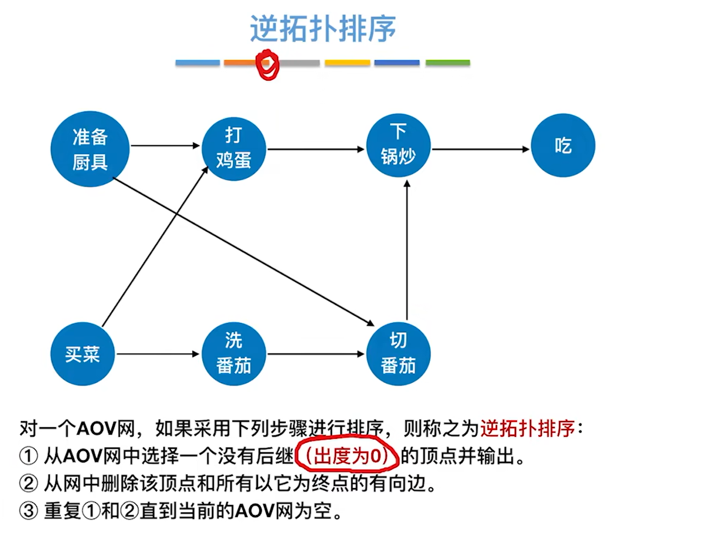
每次删除出度为 0 的顶点，并把该顶点的邻接点出度减 1
序列不唯一 -
用 dfs 实现拓扑排序
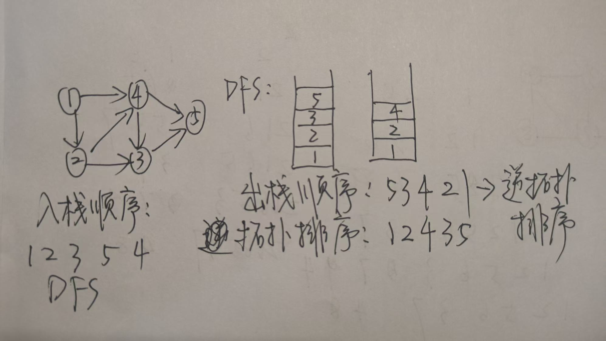
# AOE 网
边表示活动，顶点表示事件
- 只有在某顶点所代表的事件发生后，从该顶点出发的各有向边所代表的活动才能开始；
- 只有在进入某顶点的各有向边所代表的活动都已结束时，该顶点所代表的事件才能发生（所以事件的最早开始时间要取最大的）
求事件的最早开始时间和最晚完成时间
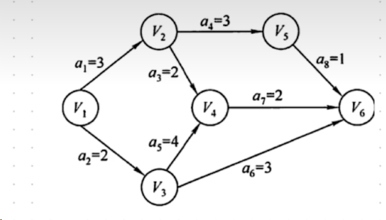
V 代表事件，a 代表活动
先求事件（V）：
| V1 | V2 | V3 | V4 | V5 | V6 | |
|---|---|---|---|---|---|---|
| 最早开始时间 | 0 | 3 | 2 | 6 | 6 | 8 |
| 最晚完成时间 | 0 | 4 | 2 | 6 | 7 | 8 |
最早开始时间从前往后取最大的（V1 填 0，V4 有 V1->V2->V4 和 V1->V3->V4 两条，取大的是 6）
最晚完成时间从后往前推 (用最早开始时间 - a），取最小的（V6 填 8，V5=V6-1，V3 有 V6->V3 和 V6->V4->V3 两条，取最小的 V4-4=2）
最早开始时间 = 最晚完成时间 —— 关键路径
活动（A）：
| a1 | a2 | a3 | a4 | a5 | a6 | a7 | a8 | |
|---|---|---|---|---|---|---|---|---|
| 最早开始时间 | 0 | 0 | 3 | 3 | 2 | 2 | 6 | 6 |
| 最晚完成时间 | 1 | 0 | 4 | 4 | 2 | 5 | 6 | 7 |
最早开始时间取箭头的出发点的最早开始时间，最晚完成时间取箭头指向的点的最晚完成时间 - a
最早开始时间 = 最晚完成时间 —— 关键活动
# 各种时间复杂度
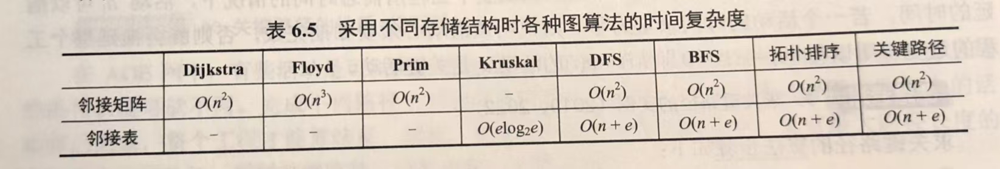